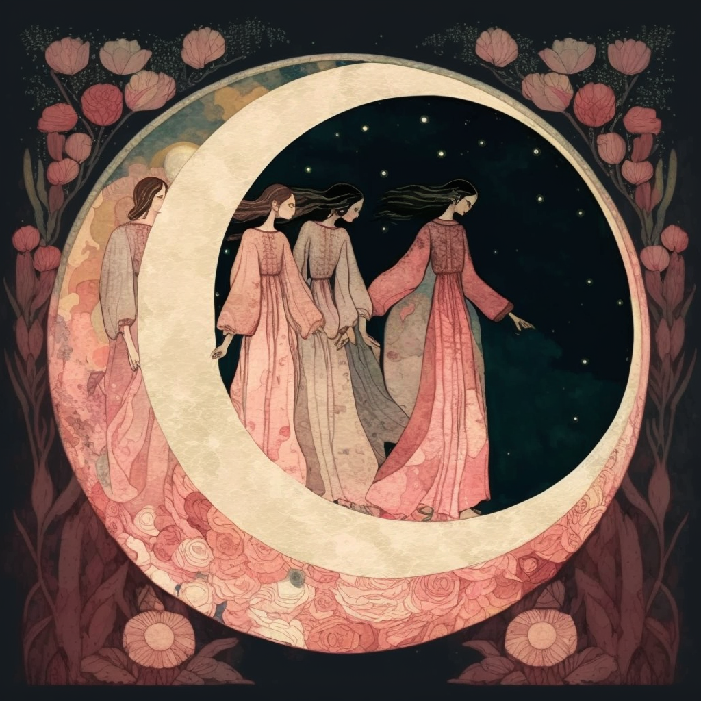
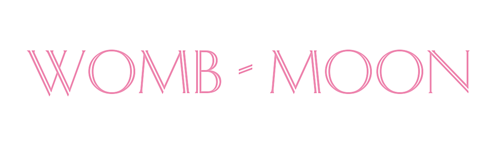

New Moon Gathering · with Womb-Moon
公 益 女 人 圈
每個月新月，我們一起，線上調頻
與 Womb-Moon 神聖女人圈引導師一同帶領
在月亮最暗、最安靜的那一晚，我們不急著向前。一起回到呼吸、回到身體，把過度向外奔忙的頻率，慢慢調回自己。這是一份免費的邀請——給每一個需要喘口氣、也需要被接住的妳。
🌑 下一場新月夜・7 / 14（週二）
每個月新月，我們一起，線上調頻
與 Womb-Moon 神聖女人圈引導師一同帶領
在月亮最暗、最安靜的那一晚，我們不急著向前。一起回到呼吸、回到身體，把過度向外奔忙的頻率，慢慢調回自己。這是一份免費的邀請——給每一個需要喘口氣、也需要被接住的妳。
「公益」是我們的初心——
不為了賣什麼，只想為更多女人，
在每個月的新月，撐開一個可以暫停的空間。
我們是陪產員，也是母親。我們知道，女人的日子常常是向外的：照顧、給予、把自己排在最後。所以我們留下每個月的新月夜，線上相聚，圍成一個圈——在這裡沒有人是專家，每個人都被聽見。妳不需要準備什麼，只要帶著這個月的自己，來就好。
這一季的公益女人圈，由我們與 Womb-Moon 神聖女人圈（由 Zoya 創立）的認證引導師一同帶領。每個月，由不同的 Womb-Moon 姊妹接力，把這個圈撐得更深、更溫柔。
新月是月相的起點，月亮隱入黑暗、看不見光。在古老的女性智慧裡，這不是空白，而是一個邀請：停下來、向內、休息，然後把願望像種子一樣，輕輕埋進土裡，等待它在接下來的循環裡慢慢長大。
女人的身體，本就順著週期流動。當我們願意跟著月亮的節奏過日子——該休息時休息、該萌芽時萌芽——許多人說，心，就安了下來。

一場 60–75 分鐘的線上聚會，跟著三個輕柔的步驟，慢慢回到中心。
先把神經系統，從整天的「備戰」狀態，慢慢調回「安在」。閉上眼，回到呼吸，回到身體。
輪流說出這個月的累與光。不被打斷、不被評判——被好好聽見，本身就是一種療癒。
為即將展開的新循環，輕輕許下一個意圖。像在新月的黑暗裡，種下一顆只屬於妳的種子。
跟著月亮，每個月一次，為自己留一個晚上。
＊ 每場皆由 Womb-Moon 神聖女人圈的引導師帶領（七月為欣妙＆宥妤），每場帶領人於報名通知中公佈。各場確切開始時間（平日晚上為主）亦以通知為準。
不需要任何身心靈基礎，也不需要正在孕產的階段。
七月，由欣妙＆宥妤一起為妳撐起這個圈；八月起，邀請 Womb-Moon 女人圈的姊妹們，一場一場接力，把這個圓圈延續下去。她們都是 Womb-Moon 認證的引導師。
七 月 場・帶 領

出身奧修靜心門徒家庭，從自己的生產、育兒與人生轉折，走進女人圈與女性能量工作。專長孕產支持、陪產、獨立生產與女性成長陪伴。2024 年成立「欣妙在陪妳工作室」，帶孕產教育、女人圈與舞動靜心。相信每個靈魂都獨一無二，擁有自己的原生智慧。
@birth.with.milliya
走過孕育、分娩、產後、親密關係與家庭角色的多重轉變與修復。專長瑜伽、覺知孕育、產後修復、神經修復與神聖女人圈帶領。相信身體、相信女人、相信被好好陪伴的力量——透過陪伴而非給答案，幫妳聽見自己身體的智慧。
@everyday_earth_women八 月 起・接 力 帶 領

Womb-Moon 神聖女人圈，由 Zoya 創立，是一個陪伴女性回到身體、子宮與月亮本質的神聖傳承。八月之後的每一場新月夜，我們邀請 Womb-Moon 的認證引導師接力帶領——她們各自帶著不同的養分與陪伴方式，讓每個月的圓圈都有新的溫度。每一場的帶領人，會在報名通知中與妳相見。
了解 Womb-Moon 引導師聯盟 →